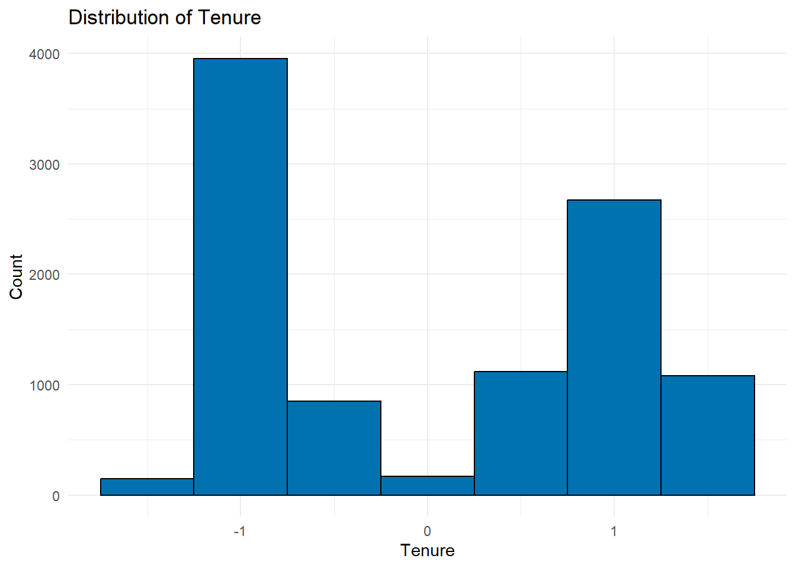
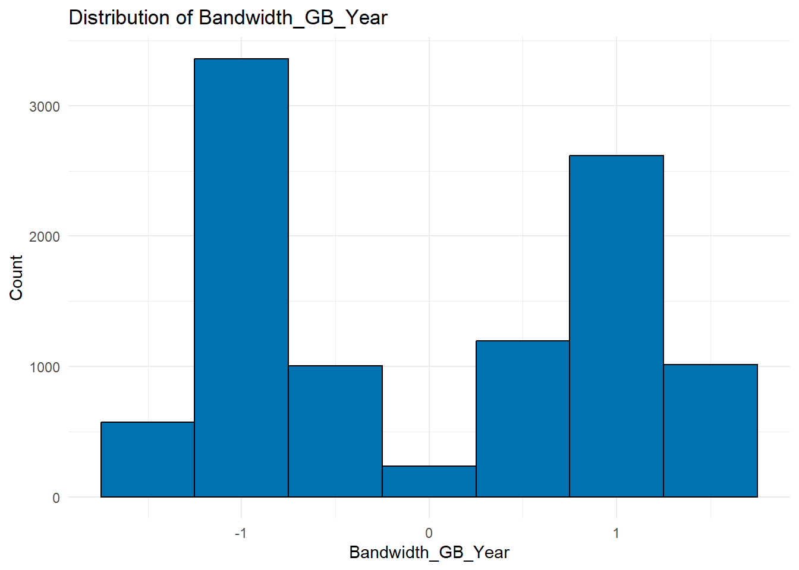
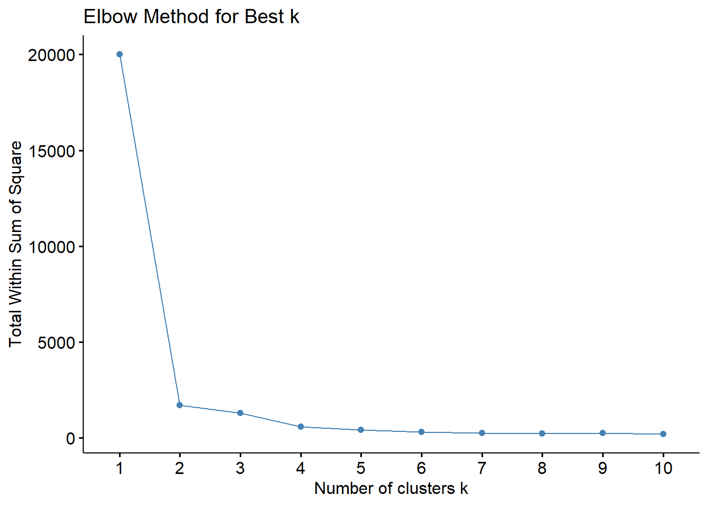
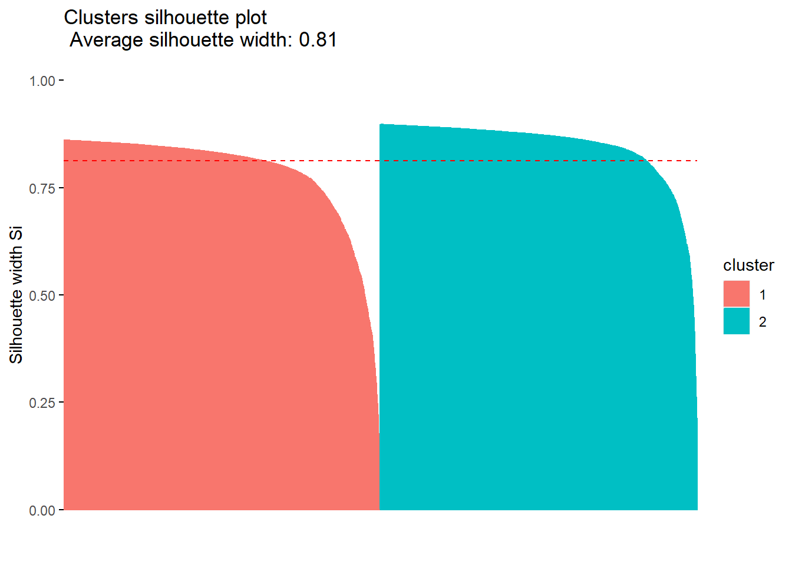
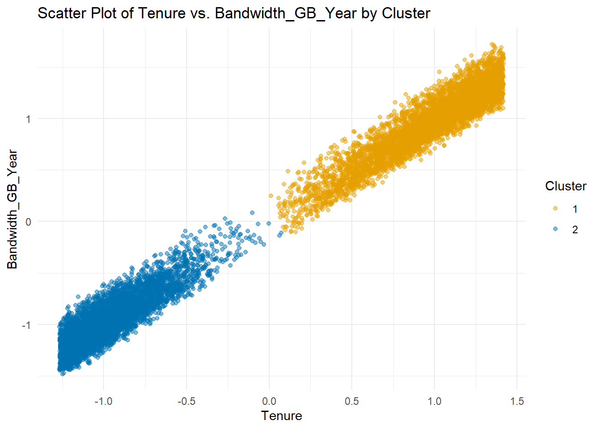

The range of Bandwidth_GB_Year is 155.5067 7158.982The range of Tenure is 1.000259 71.99928Part I: Research Question
A1: Can we identify distinct groups of customers based on their tenure and bandwidth GB usage, using K-means clustering?
A2: The goal of this analysis is to group customers into distinct clusters based on their tenure and bandwidth GB usage to identify patterns that could help better understand customer behavior.
Part II: Technique Justification
B1: l will be using k-means clustering with two continuous variables, Tenure and Bandwidth_GB_Year, to group customers into clusters based on their similarity. The k-means algorithm itterates through each customer and assigns them to the nearest cluster based on euclidean distance and updates the centroids. It repeats this process until the clusters don’t change anymore. This ensures that customers within a cluster are more similar to each other than to those in other clusters. The expected outcome is to identify distinct customer groups, such as long-time customers with low bandwidth usage or newer customers with high bandwidth usage.
B2: On main assumption of k-means clustering is that the clusters are spherical (geeksforgeeks, 2023), meaning that the spread of the data points is similar in all directions within each cluster. This is important because k-means uses the euclidean distance between points to determine the cluster assignment, as mentioned in B1, and if the clusters are spherical then the distance between points is roughly the same.
The range of Bandwidth_GB_Year is 155.5067 7158.982The range of Tenure is 1.000259 71.99928B3: In this analysis, I used Tidyverse for basic data manipulation and visualizations. Cluster was used for cluster analysis. Specifically I used silhouette() to calculate the silhouette score that measures the quality of the k-means clustering. Lastly I used factoextra() to visualize the scree plot for finding the optimal k value, plotting the clusters themselves, and for plotting the silhouette scores.
Part III: Data Preparation
C1: One pre-processing goal is to scale the variables so that they have equal weight in the k-means clustering algorithm because the range on the values is vastly different, as noted in section B2. So it is essential that these variables are properly scaled.
C2: In his D212 webinar, Dr Kamara suggests that two variables is enough for for this assessment (Kamara, 2023). Therefore, I have chosen to investigate Bandwidth_GB_Year and Tenure. Tenure indicates customer stability and loyalty while bandwidth usage displays the customer’s usage of the companies services. When analyzing these together with k-means, it becomes possible to identify the distinct groups and analyze these customers’ behavior.
C3: I picked two numeric variables, Tenure and Bandwidth_GB_Year , and then I scaled them using scale().


# Preparing the data ------------------------------------------------------
churn <- churn[, c("Tenure", "Bandwidth_GB_Year")] #picked only 2 variables (Kamara, 2023)
#scaling the data
churn <- as.data.frame(scale(churn))C4: A copy of the cleaned dataset will be provided in the submission files and is named “churn_cleaned_data.csv”. Below is a sample of the cleaned dataset. The output shows the standardized values where each variable has a mean of 0 and a standard deviation of 1.
Tenure Bandwidth_GB_Year
1 -1.0486938 -1.1384301
2 -1.2619381 -1.1858165
3 -0.7099043 -0.6121071
4 -0.6594910 -0.5618291
5 -1.2424891 -1.4281131
6 -1.0409231 -1.0767351Part IV: Analysis
D1: To determine the optimal number of clusters, I used the elbow method. The scree plot below plots the total within sum of squares (WSS) and the number of clusters. From the plot it appears that the WSS change slows significantly after just two clusters. There is large changes from one to two clusters, and a small change from two to four, but after four clusters the WSS appears to essentially level off. Three or even four clusters could be argued for based on the elbow method. However two clusters seems to be the optimal k value as the remaining clusters appear to be mostly leveled off by the second cluster.
#scree plot to find the elbow and best K value
fviz_nbclust(churn, kmeans, method = "wss") + # SOURCE: (Bobbitt,2022)
labs(title = "Elbow Method for Best k")
D2: The following code performes the k-means clustering with 4 clusters (centers = 4) as mentioned in D1 and an nstart of 20. According to an article from Smith College in 2016, “It is generally recommended to always run K-means clustering with a large value of nstart, such as 20 or 50…” (Smith College, 2016, under ‘K-Means Clustering’ section). So I decided to use 20 as my nstart value.
km <- kmeans(churn, centers = 2, nstart = 20)Part V: Data Summary and Implications
E1: The quality of the clusters is evaluated by using a silhouette plot, generated withe fviz_silhouette(). The average silhouette width is 0.81, 0.78 for cluster one and 0.84 for cluster two. The silhouette scores range from -1 (bad) to +1 (good). So a width of 0.81 is suggestive of a good quality cluster.
cluster size ave.sil.width
1 1 4999 0.78
2 2 5001 0.84
E2: This k-means algorithm was able to identify two distinct clusters in the data. When I print the cluster centroids it becomes apparent that the clusters are identified as follows:
Cluster 1: High Tenure and high Bandwidth usage.
Cluster 2: Low Tenure and low Bandwidth usage.
Tenure Bandwidth_GB_Year
1 0.9606521 0.9522220
2 -0.9602679 -0.9518412
Because there appears to be a strong correlation between tenure and average bandwidth usage in both clusters suggesting that customers with long tenure tend to use more data per year and customers who have a short tenure use less per year.
E3: The main limitation to this analysis is that it only takes into account 2 variables and because of this, it might not capture the full complexity of a customer’s behavior. Adding more features would help the algorithm cluster the customer into more accurate groups and allow me to make more accurate recommendations.
E4: Because we know that customers in cluster 2 have a low tenure and a low bandwidth usage per year, I recommend that the company investigate further into the reason for their low tenure and focus retention efforts on these customers in cluster 2. In contrast, customers in cluster 1 appear to be happy. They have a long tenure and they are using the internet services as expected. I would recommend that the company offer incentives to these customers that would reward their loyalty.
Part VI: Demonstration
F: My Panopto video link will be included in my submission files.
G-H: Code Sources:
Bobbitt. (2022, September 8). How to use the elbow method in R to find optimal clusters. Statology. https://www.statology.org/elbow-method-in-r/
GeeksforGeeks. (2023, December 9). Demonstration of K-Means assumptions. https://www.geeksforgeeks.org/demonstration-of-k-means-assumptions/
Kamara, K. (2023, March 19). Data mining II - D212 Webinar [Video]. Western Governors University. https://wgu.hosted.panopto.com/Panopto/Pages/Viewer.aspx?id=afbc9be3-7f3a-48ef-a862-afcb0118b043&query=D212
Smith College. (2016). 10.5.1 K-Means clustering. Retrieved from https://www.science.smith.edu/~jcrouser/SDS293/labs/lab16-r.html